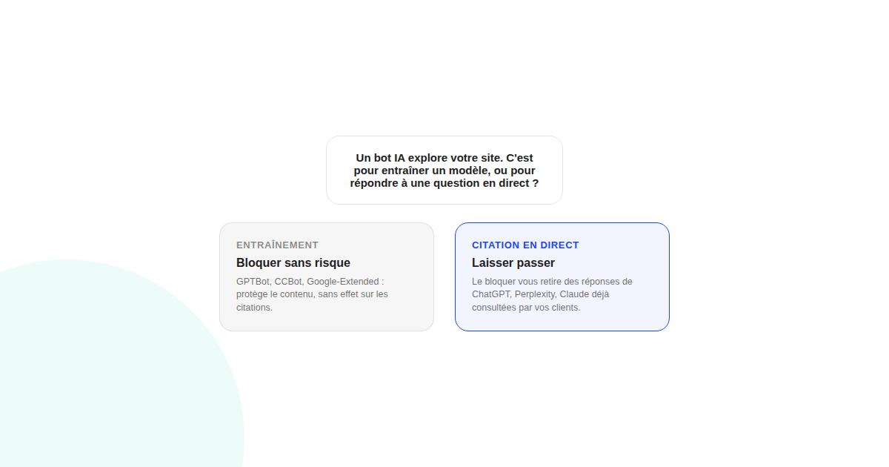
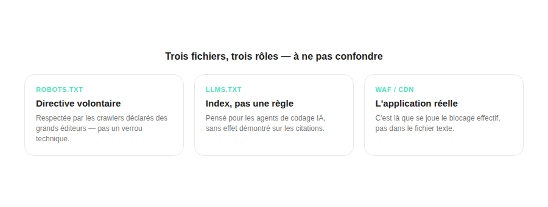

robots.txt ou llms.txt : faut-il bloquer les crawlers IA sur son site ?
« Bloquons tous les bots IA, on ne veut pas nourrir leurs modèles gratuitement » — une réaction compréhensible, mais qui peut vous retirer sans le vouloir des réponses de ChatGPT ou Perplexity que vos clients consultent déjà. Tout dépend de quel bot vous bloquez, et pourquoi.

Face à la multiplication des bots IA qui explorent les sites, le réflexe de « tout bloquer » est compréhensible, mais il repose sur une confusion fréquente : tous les bots IA n'ont pas le même rôle, et les bloquer tous revient souvent à se couper des réponses de ChatGPT ou Perplexity que vos clients potentiels consultent déjà pour vous comparer à la concurrence.
Trois types de bots, trois rôles différents
La distinction la plus utile sépare les bots en trois catégories : les crawlers d'entraînement (GPTBot, CCBot, Google-Extended), qui alimentent les futurs modèles ; les crawlers de récupération, qui alimentent les réponses citées en temps réel quand un utilisateur pose une question ; et les agents de récupération à la demande, déclenchés en direct pendant qu'un utilisateur discute avec l'IA. Bloquer les premiers protège votre contenu sans vous exclure des citations ; bloquer les seconds vous retire des réponses.
robots.txt reste une directive, pas un verrou
Plusieurs analyses du secteur insistent sur ce point : robots.txt n'a jamais été un mécanisme d'application technique, mais un panneau affiché à l'entrée — l'application réelle d'un blocage se fait au niveau du WAF ou du CDN, pas dans ce fichier texte. Les crawlers déclarés des grands éditeurs le respectent en général : Anthropic indique ainsi que ses trois robots (dont Claude-User) respectent chacun le fichier séparément, et que bloquer ClaudeBot ne bloque pas automatiquement les deux autres.

llms.txt n'est pas ce que son nom suggère
Contrairement à une idée répandue, llms.txt n'est ni une directive d'exploration ni une demande de citation : c'est un fichier index, conçu à l'origine pour aider des agents de codage IA à naviguer dans la documentation d'un projet. Il ne remplace pas robots.txt et sa présence (environ 10 % des domaines explorés, selon une estimation de SE Ranking) ne garantit aucun effet mesuré sur les citations.
Un changement de politique à surveiller : Cloudflare
Depuis le 15 septembre 2026, Cloudflare bloque par défaut les bots d'entraînement et les agents sur les pages monétisées par de la publicité, tout en laissant passer les bots de recherche classiques — un changement qui affecte directement les sites utilisant ce CDN, sans que l'éditeur n'ait forcément touché à son propre robots.txt.
Ce que fait la majorité des programmes GEO sérieux en 2026
Selon plusieurs guides spécialisés, la pratique la plus répandue chez les sites qui prennent le GEO au sérieux consiste à autoriser l'ensemble des grands crawlers déclarés et à gérer les abus (volume excessif, bots non déclarés) par limitation de débit au niveau du CDN, plutôt que par un blocage généralisé dans robots.txt — un choix cohérent avec le fait que la visibilité dans les réponses IA dépend justement de rester accessible à ces crawlers.
FAQ
Bloquer ClaudeBot empêche-t-il Claude de me citer ?
Anthropic indique que ses trois robots (dont Claude-User) respectent chacun le robots.txt séparément : bloquer ClaudeBot (utilisé pour l'entraînement) ne bloque pas automatiquement les deux autres, dont celui qui alimente les réponses citées.
Un fichier llms.txt empêche-t-il les IA de citer mon contenu ?
Non : llms.txt n'est pas une directive d'exploration ni une demande de citation, mais un index pensé à l'origine pour des agents de codage IA. Il ne remplace pas robots.txt et n'a pas d'effet direct démontré sur les citations dans les réponses des IA génératives.
robots.txt empêche-t-il vraiment un bot IA d'explorer mon site ?
robots.txt est une directive respectée volontairement, pas un verrou technique. Les crawlers déclarés des grands éditeurs (Google, OpenAI, Anthropic) le respectent généralement, mais rien n'empêche techniquement un bot non déclaré de l'ignorer — l'application réelle d'un blocage se fait au niveau du WAF ou du CDN.
Envie d'auditer les accès des bots IA à votre site ?
Pour aller plus loin, voir la page GEO, l'audit de visibilité IA, et le guide complet GEO.
Pour continuer sur ce sujet.